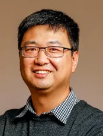

上海交通大学蒋冬生课题组招聘启事
原文：https://mp.weixin.qq.com/s?__biz=MzAwMzIzOTk5OQ==&mid=2247506493&idx=2&sn=6ae8933d300ca87a4a3397e40798a8e2&chksm=9b3ca36dac4b2a7bd016b42d7c72d38ea25778e2d5576548635970222fe3a3381e56010dfca0#rd 合集：求职/求学/招聘
联系方式：
dongsheng.jiang@shgh.cn

一、导师简介

蒋冬生
-
上海交通大学医学院附属第一人民医院，疑难疾病精准研究中心，研究员、独立PI；创伤医学中心科研副主任
-
国家海外优秀青年科学基金获得者
-
上海领军人才海外项目获得者
-
德国亥姆霍兹慕尼黑研究中心，再生生物和医学研究所，副所长、青年PI
-
德国乌尔姆大学，博士后
-
新加坡国立大学，博士
-
新加坡国立大学，学士
二、研究方向
创面愈合与再生、疤痕修复
三、原创性成果
1）从成纤维细胞异质性的角度阐释了疤痕的成因，为预防疤痕的形成提供了全新的治疗思路（ Nat Cell Biol 2018 ）；
2）修正了疤痕形成的传统观念，开创性地揭示了皮下筋膜是疤痕组织的主要来源（ Nature 2019 ）；
3）用活体成像技术展示疤痕的形成过程和其细胞分子机制，为疤痕研究提供了一个全新的时空维度视角（ Nat Commun 2020 ）；
4）建立创面和疤痕组织外植体模型和转基因小鼠模型，优化了疤痕机制研究过程中涉及体内、外实验的模型（ Nat Commun 2023 ）。
四、招聘详情
为满足新成立的课题组的发展需要，现诚邀有志青年加入我们团队，破解组织再生相关领域的奥秘，共同实现科研梦想！我们拟招聘助理研究员、博士后、以及技术员，广邀海内外英才加入我们的行列！
- 助理研究员2名；博士后3名
招聘要求 1)已取得（或即将取得）生物学、医学或生物信息学等相关专业博士学位；2)熟练掌握生物学实验技能，具有细胞实验、动物实验、生物成像、生物信息等方面研究经验者优先考虑；3)有高质量的SCI论文发表或即将发表；4)品行端正，热爱科学探索，工作认真负责，具有良好的科研素养、创新能力、团队合作和组织协调能力；5)能相对独立地进行项目申请、课题执行，并指导研究生参与所负责的研究课题；6)具有良好的英文阅读及表达交流能力，能独立撰写英文科研论文和项目申请。工作待遇 1)薪酬福利：按照上海交通大学附属上海市第一人民医院常规招聘，享受五险一金等相关福利，年薪25-35万元（不包含科研奖励）；2)职业发展：鼓励并大力支持申请国家自然科学基金及各类地方级科研基金项目；科研工作优秀者，可优先推荐申报青年研究员（CO-PI或青年PI）；按政策可推荐参与职称评审；3)科研条件：提供科研项目经费支持以及与其他实验室或临床科室合作的机会；提供稳定的工作环境和一流的科研平台，根据个人兴趣与需求结合本课题组研究方向提供相应的职业发展支持；4)服务保障：协调解决个人户口、子女入学入托及配偶工作，提供优质医疗资源和执业健康管理。
- 技术员1名
招聘要求 1)生物学等相关专业大专/本科及以上学历，具有基本的细胞和小鼠实验、动物繁育等相关工作经验者优先；2)负责实验室日常运作、试剂耗材采购、常用试剂配制、文件资料整理、财务报销等工作；3)为人踏实，善于沟通，工作严谨，具有较强的分析解决问题、独立工作能力和团队协作精神。工作待遇 1)薪酬福利：按照上海交通大学附属上海市第一人民医院常规招聘，享受五险一金等相关福利，年薪13-18万元（不包含科研奖励）；2)职业发展：工作优异且有意向者可推荐免试读研读博。3)服务保障：提供优质医疗资源和执业健康管理。 五、申请方式
凡符合以上岗位要求且有意向者，请将个人简历发至dongsheng.jiang@shgh.cn，邮件主题表明为“应聘**+****岗位 +**姓名 ”，应聘资料予以保密。初审合格后，将尽快安排面试，择优录取。本招聘信息长期有效。
五、近5年代表性文章
-
1) Kalgudde Gopal S#, Dai R#, Stefanska AM, Ansari M, Zhao J, Ramesh P, Bagnoli J W, Correa-Gallegos D, Lin Y, Christ S, Angelidis I, Lupperger V, Marr C, Davies LC, Enard W, Machens HG, Schiller HB*, Jiang D* , Rinkevich Y*. (2023). Wound infiltrating adipocytes are not myofibroblasts. Nat Commun 14: 3020.
-
2)Jiang D , Guo R, Machens HG, Rinkevich Y. (2023). Diversity of fibroblasts and their roles in wound healing. Cold Spring Harb Perspect Biol 15(3): a041222.
-
3)Wan L#, Jiang D #, Correa-Gallegos D, Ramesh P, Zhao J, Ye H, Zhu S, Wannemacher J, Volz T, Rinkevich Y. (2021). Connexin43 gap junction drives fascia mobilization and repair of deep skin wounds. Matrix Biol 97: 58-71.
-
4)Jiang D , Christ S, Correa-Gallegos D, Ramesh P, Kalgudde Gopal S, Wannemacher J, Mayr CH, Lupperger V, Yu Q, Ye H, Mück-Häusl M, Rajendran V, Wan L, Liu J, Mirastschijski U, Volz T, Marr C, Schiller HB, Rinkevich Y. (2020). Injury triggers fascia fibroblast collective cell migration to drive scar formation through N-cadherin. Nat Commun 11: 5653.
-
5)Jiang D , Singh K, Muschhammer J, Schatz S, Sindrilaru A, Makrantonaki E, Qi Y, Wlaschek M, Scharffetter-Kochanek K. (2020). MSCs rescue impaired wound healing in a murine LAD1 model by adaptive responses to low TGF-beta1 levels. EMBO Rep 21(4): e49115.
-
6) Jiang D, de Vries JC, Muschhammer J, Schatz S, Ye H, Hein T, Fidan M, Romanov VS, Rinkevich Y, Scharffetter-Kochanek K*. (2020). Local and transient inhibition of p21 expression ameliorates age-related delayed wound healing. Wound Repair Regen 28(1): 49-60.
-
7)Correa-Gallegos D#, Jiang D #, Christ S, Ramesh P, Ye H, Wannemacher J, Kalgudde Gopal S, Yu Q, Aichler M, Walch A, Mirastschijski U, Volz T, Rinkevich Y. (2019). Patch repair of deep wounds by mobilized fascia. Nature 576(7786): 287-292.
-
8)Jiang D , Correa-Gallegos D, Christ S, Stefanska A, Liu J, Ramesh P, Rajendran V, De Santis MM, Wagner DE, Rinkevich Y. (2018). Two succeeding fibroblastic lineages drive dermal development and the transition from regeneration to scarring. Nat Cell Biol 20(4): 422-431.
 往期回顾
往期回顾
歪!?来"Biomamba 生信基地"兼职？****************
荷兰马斯特里赫特大学Judith教授招收2023年生物信息学方向博士生求学| 寻找一个生信博导
Ulf’s Computational Biomedicine Lab 博士招聘启示
求学| 寻找一个肠道微生物或系统生物学的博导
南方科技大学第一附属医院刘利平课题组诚聘博士后中南大学湘雅医院李津臣课题组诚聘生物信息学相关多学科交叉人才福州大学医工交叉研究院徐贻佺课题组招生启事
带你们做了那么久的单细胞，也带你们找找工作
浙大医学院生物信息学 博士招生 调剂信息浙江大学招聘博士后&科研助理
加州大学洛杉矶分校招聘[staff scientists in computational biology]
毛华伟教授课题组科研博后/科研助理
赵慧英课题组科研助理招聘启事
西湖大学曾坚阳人工智能与计算生物学课题组招聘| 博士生、实习生
复旦大学马通课题组招聘|科研助理
上海交通大学医学院冯智星课题组招聘
美国德州理工大学健康科学中心（TTUHSC）生物信息学、计算基因组学博后及博士生招聘
天津医科大学蔡志刚教授课题组| 博士后招聘
求学| 寻找博导~
求学| 寻找博导. 已发表